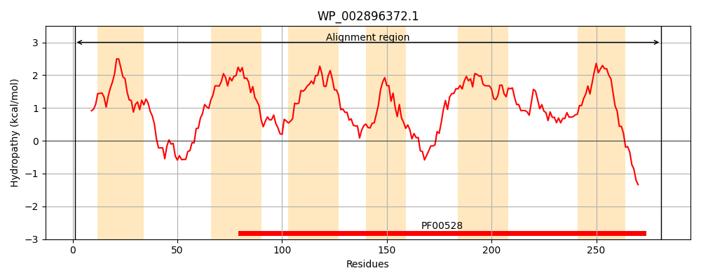
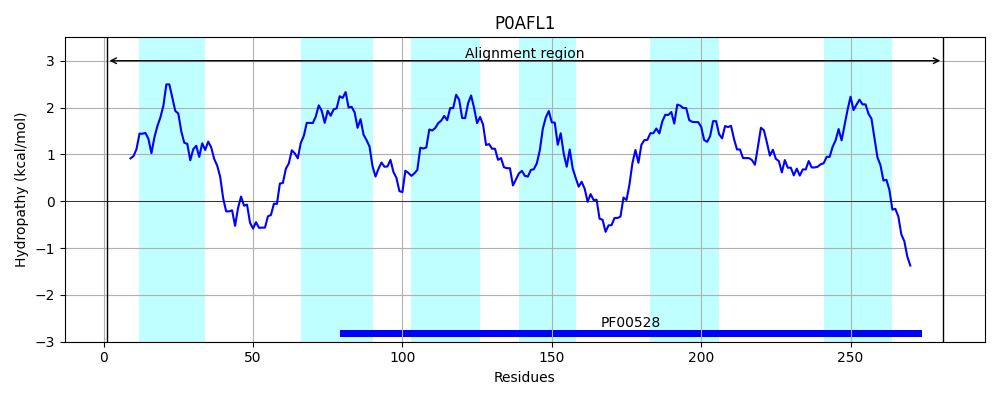
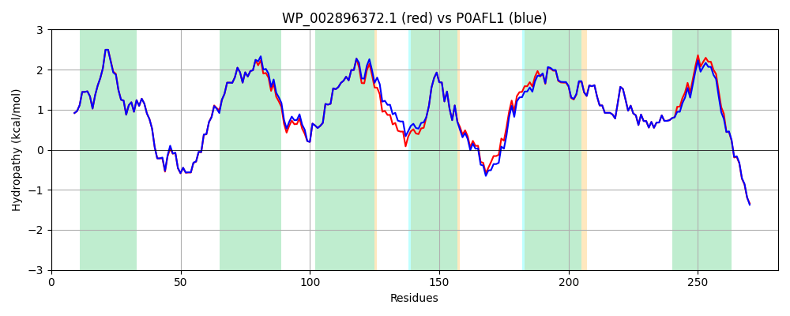

Hit Accession: P0AFL1
Hit TCID: 3.A.1.11.2
Hit Description: gnl|BL_ORD_ID|8830 gnl|TC-DB|P0AFL1|3.A.1.11.2 Putrescine transport system permease protein potI - Escherichia coli.
Mach Len: 281
e:0.000000
Query TMS Count : 6
Hit TMS Count: 6
TMS-Overlap Score: 6.900000
Predicted Substrates:CHEBI:8650;putrescine
BLAST Alignment:
Score: 1354 , Bit scores: 526 bits, E-value: 0.0e+00, Alignment length: 281, Percentage identity: 95
Query: 1 MNDLPVVRSPWRILILVLGFTFLYAPMLMLVIYSFNSSKLVTVWAGWSTRWYSELFHDDAMMSAVGLSLTIAACAATAAAILGTIAAVVMVRFGRFRGSNGFAFMITAPLVMPDVITGLSLLLLFVALGHAIGWPSDRGMLTIWLAHVTFCTAYVAVVISSRLRELDHSIEEAAMDLGAAPLKVFFVITLPMIMPAVISGWLLAFTLSLDDLVIASFVSGPGATTLPMLVFSSVRMGVNPEINALATLILGVVGIVGFIAWYLMARAEKQRVRDIQRARQG 281
MN+LPVVRSPWRI+IL+LGFTFLYAPMLMLVIYSFNSSKLVTVWAGWSTRWY EL DDAMMSAVGLSLTIAACAATAAAILGTIAAVV+VRFGRFRGSNGFAFMITAPLVMPDVITGLSLLLLFVAL HAIGWP+DRGMLTIWLAHVTFCTAYVAVVISSRLRELD SIEEAAMDLGA PLKVFFVITLPMIMPA+ISGWLLAFTLSLDDLVIASFVSGPGATTLPMLVFSSVRMGVNPEINALATLILG VGIVGFIAWYLMARAEKQR+RDIQRAR+G
Sbjct: 1 MNNLPVVRSPWRIVILLLGFTFLYAPMLMLVIYSFNSSKLVTVWAGWSTRWYGELLRDDAMMSAVGLSLTIAACAATAAAILGTIAAVVLVRFGRFRGSNGFAFMITAPLVMPDVITGLSLLLLFVALAHAIGWPADRGMLTIWLAHVTFCTAYVAVVISSRLRELDRSIEEAAMDLGATPLKVFFVITLPMIMPAIISGWLLAFTLSLDDLVIASFVSGPGATTLPMLVFSSVRMGVNPEINALATLILGAVGIVGFIAWYLMARAEKQRIRDIQRARRG 281 | Protein Hydropathy Plots: |
|---|
|  |  |
Pairwise Alignment-Hydropathy Plot:
|
|---|
|  |